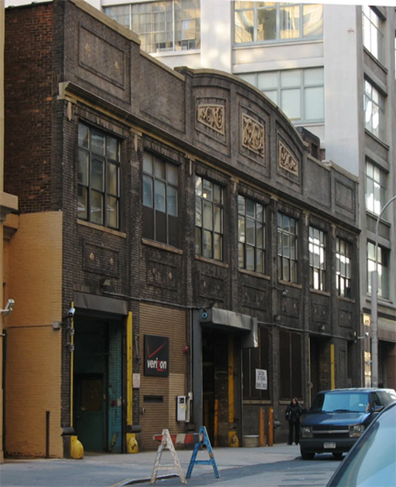

UK garage guide
What is UK garage?
London took an American record, played it too fast, and broke the beat. What came out of that, and why more of it is being played now than at any point since 1999.
A misunderstanding that became a genre.
UK garage is what happened when London got hold of an American record and played it wrong on purpose.
The American original was garage music in its first sense: warm, gospel-inflected house named after Paradise Garage, the New York club where Larry Levan played through the seventies and eighties. It arrived in British record shops in the early nineties as a b-side curiosity. What London did with it over the next decade produced a genre that sounds nothing like its parent, and then produced two more genres that sound nothing like it either.
This guide covers the sound, where the name came from, the three branches the music split into, the moment it turned into dubstep and grime, and why more UK garage is being played now than at any point since 1999.
What is UK garage?
UK garage is dance music built at roughly 130 beats per minute on a beat that refuses to sit straight. As a garage music genre it sits between house and jungle and belongs to neither. Where house puts a kick on every quarter note and lets you count it without trying, garage pulls the beat apart and leaves gaps in it. The swing is heavy, the bass is loud and short, and the vocals are usually sped up and cut into pieces.
The name is a British misunderstanding that stuck. It points at Paradise Garage in New York, but the music it describes is a London invention with almost nothing in common with what Larry Levan played there. By the time the word settled, "garage" in Britain meant something the Americans who inspired it would not have recognised.
Three things separate it from everything around it. The tempo sits between house and jungle, faster than one and slower than the other. The rhythm is broken rather than four to the floor, though one of its branches did go four to the floor and confused everyone for years. And the culture around it was explicitly dressed up, champagne over pills, a reaction against the rave scene that came before it.
The name
Why it is called garage, and what New York has to do with it.
Paradise Garage closed in 1987. The music played there by Larry Levan, a mix of disco, soul and early house, became known as garage house or simply garage in the American sense.
British DJs in the early nineties were buying American house imports and playing the more soulful, vocal-led records at a slightly faster speed. Speeding up a record raises its pitch and tightens its groove, and playing a New York garage house record at 130 rather than 120 made it sharper and more urgent. That habit, pitched-up American vocal house, is the actual beginning.

Then British producers started making records that only worked at that speed. They kept the diva vocals and threw out the four to the floor kick, replacing it with a shuffling, broken pattern borrowed from jungle. Within about three years the music had stopped resembling its American parent entirely, but the name had already stuck.
This is why the qualifier matters. "Garage" in America means Larry Levan. "UK garage" means the thing London built and then named after a club most of its audience had never been to.
The sound: 130 BPM and a beat that will not sit still.
UK garage BPM runs at 130 to 135. That number is the first thing to know about it, because the tempo is doing more work than it looks.
At 120 you have house, which walks. At 170 you have jungle, which sprints. 130 is a specific and slightly awkward speed: fast enough to feel urgent, slow enough that you can hear every element separately. It is the tempo of a dance you can do in good shoes.
The rhythm is where it stops sounding like anything else. Instead of a kick on every beat, garage puts a kick on the one, a snare or clap on the three, and then fills the space between with hi-hats and a shuffle that lands slightly off the grid. Producers push the timing of individual hits forward and back so the beat never quite settles, and that instability is the point. Your body keeps trying to resolve it and cannot.
The bass is short, loud and low, usually a stab rather than a sustained note. Vocals are chopped, pitched up and repeated until a phrase stops meaning anything and becomes a rhythm. If you want to hear all of this at once, put on a set and listen to what the hi-hats are doing behind everything else.
| Genre | Tempo | What the drums do |
|---|---|---|
| House | 120 to 128 BPM | Kick on all four beats |
| UK garage | 130 to 135 BPM | Broken, or four to the floor in speed garage and bassline |
| Grime | 140 BPM | Garage drums with the swing taken out |
| Dubstep | 140 BPM | Half-time, so it feels like 70 |
| Jungle and drum and bass | 160 to 175 BPM | Chopped breakbeat |
1995 to 1998
Speed garage: the branch that kept the four to the floor.
Speed garage came first, around 1995 to 1997, and it is the branch that kept the four to the floor kick.
It took the pitched-up American vocal house that started the whole thing and added a jungle bassline underneath: the wobbling, sliding low end that British producers had spent the early nineties perfecting on a different tempo. The result was a record you could mix with house but which had a bottom end from a completely different world.
Speed garage has a second origin story, and it runs through New York. Armand van Helden's 1996 remix of Sneaker Pimps' "Spin Spin Sugar" put a rolling, sub-heavy bassline under a British vocal, and it is often credited with breaking speed garage into the mainstream.
Double 99's "Ripgroove" is the record most people reach for. It is a four to the floor kick, an enormous bass slide, and almost nothing else, and it explains the genre in about thirty seconds.
Speed garage was the sound of 1997, and it burned out fast. Within two years the scene had moved to a broken beat and speed garage looked briefly like a dead end. It was not: it came back through bassline a decade later, and again through the current revival, which has more speed garage in it than any period since.
1997 to 2002
2-step: the two missing kicks that made it famous.
2-step is the branch that made UK garage famous, and it is the one most people mean when they say garage.
The name describes what it did to the drums. A four to the floor beat has four kicks per bar. 2-step removes two of them, leaving a kick on the one and a snare on the three, and the missing beats leave holes that the bass and the hi-hats fall into. The result skips rather than pounds. It is the reason garage can be played loud in a club and still sound light.
The classic 2-step record is a sped-up soul or R&B vocal over that skipping beat, with a bass that answers the vocal rather than sitting under it. Artful Dodger and Craig David's "Re-Rewind" reached number two in 1999 and put a garage record on every radio in the country. MJ Cole made records that were closer to orchestral arrangement than dance production. Sweet Female Attitude's "Flowers" is a pop song and a rhythm exercise at the same time.
2-step is also where garage stops being underground. Between 1999 and 2001 it was on daytime radio, in the charts and on television, and the backlash that followed was as much about that as about the music.
Sheffield
Bassline: what happened when garage went north.
Bassline is what happened when garage went north.
The story starts in Sheffield around 2002, at a club called Niche, where DJs were playing speed garage long after London had abandoned it. The Sheffield version got harder and simpler: a four to the floor kick, and a bass sound so aggressive that the melody, the hook and the drop were all the same thing.
The genre was known as niche or bassline house before it settled on bassline, and for most of the 2000s it existed almost entirely outside London. It had its own circuit, its own producers and its own charts, and the national music press mostly ignored it until T2's "Heartbroken" spent three weeks at number two in 2007.
Bassline matters to the story for two reasons. It kept speed garage alive through the years when London had moved on. And it is the direct ancestor of a lot of what the current revival sounds like: the bass in a 2024 garage record owes more to Sheffield in 2006 than to London in 1999.
| Branch | Roughly when | What it does | The record |
|---|---|---|---|
| Speed garage | 1995 to 1998 | Four to the floor, jungle bassline underneath | Double 99, "Ripgroove" |
| 2-step | 1997 to 2002 | Two kicks removed, the beat skips, sped-up vocals | Artful Dodger, "Re-Rewind" |
| Bassline | 2002 onward, Sheffield | Four to the floor again, bass carries the melody | T2, "Heartbroken" |
| Future garage | Late 2000s onward | Garage swing slowed and softened, sub-bass | Burial, "Archangel" |
| Current revival | 2020 onward | All three branches at once, louder bass | Interplanetary Criminal and Eliza Rose, "B.O.T.A." |
Garage and house: what is actually different.
The confusion is understandable, because garage came out of house and one of its branches went back to sounding like house.
The clean answer is the drums. House puts a kick on all four beats of the bar. 2-step garage puts a kick on the first beat and a snare on the third and leaves the rest empty. If you can count a steady thump all the way through, you are listening to house or to speed garage. If the beat skips and leaves gaps, it is 2-step.
The second answer is tempo. House sits around 120 to 128. Garage sits around 130 to 135. That difference sounds small written down and is obvious in a room.
The third is the vocals. House vocals are usually left at their recorded pitch and allowed to run. Garage vocals are sped up, cut into fragments and used as percussion. A garage record often has a voice on it and no song.
Ayia Napa: four summers in Cyprus.
For about four summers, UK garage's spiritual home was a resort town in Cyprus.
Ayia Napa in 1999 to 2002 was where the London garage scene went on holiday and then kept going. Promoters flew DJs out, clubs programmed garage nights all summer, and a generation of listeners heard the music in a place with no connection to the estates and pirate radio stations it came from. Boiler Room made a whole film about it, which tells you how much of the genre's memory is tied up in that stretch of coast.
It is a strange chapter and an important one. Ayia Napa is where garage stopped being a London thing, and it is also where the scene's commercial peak and its dilution happened at the same time. By 2002 the parties were still there and the records had got worse.
2001 to 2005
How garage became dubstep and grime.
The most-asked question about UK garage is not what it is. It is where it went.
Around 2001 the mainstream success of 2-step created a split. The music on daytime radio got softer, more vocal and more polished, and the producers who were not interested in that started making the opposite: instrumental, darker, stripped of the diva vocal entirely.
Two things came out of that. One went down in tempo and up in weight, kept the broken 2-step beat, dropped everything melodic and became dubstep. The other kept the energy, added MCs and became grime. Both were made by people who had been making garage a year earlier, on the same equipment, in the same part of London.

If you listen to a 2001 dark garage instrumental next to a 2005 dubstep record, the family resemblance is obvious: the same skipping drums, the same space around the bass, the same refusal to fill every bar. Grime is harder to hear as garage until you notice that the tempo is identical and the drum patterns are the same ones with the swing taken out.
This is why the three genres are usually explained together. They are not neighbours. They are the same scene at three different moments.
The classics, and what each one explains.
A short list of old school garage records. Every UK garage classics playlist draws on these, and these UK garage songs do the explaining better than any paragraph can.
Double 99, "Ripgroove", 1997. Speed garage in its purest form.
Artful Dodger featuring Craig David, "Re-Rewind", 1999. The record that took garage to number two and made Craig David a household name.
Sweet Female Attitude, "Flowers", 2000. The 2-step vocal record most likely to be recognised by someone who has never heard the word garage.
MJ Cole, "Sincere", 1998. Proof that the genre could carry an arrangement.
Wookie, "Battle", 2000. The bassline that a generation of producers has been rewriting ever since.
T2 featuring Jodie Aysha, "Heartbroken", 2007. Three weeks at number two, held off the top by Leona Lewis. Bassline's crossover, and the moment Sheffield got its due.
Burial, "Archangel", 2007. Not garage by any strict definition, and the clearest evidence of where garage went.
Who is playing it now.
The current generation of UK garage artists is easier to describe with numbers than with adjectives.
Across a catalogue of 62,877 recorded DJ sets from 37 channels, 736 are tagged as UK garage, 2-step, speed garage or bassline. The names that come up most often across those sets are Neffa-T, Coziest, Cromby, Yung Singh, Oneman, Conducta, Anz, Interplanetary Criminal, Introspekt and Eliza Rose.
Some of those names are worth knowing for specific reasons. Interplanetary Criminal and Eliza Rose made "B.O.T.A. (Baddest of Them All)", which spent five weeks at number one in the UK in 2022. It was the 1,400th number one single in the history of the chart, and it was the country's number one on the day Queen Elizabeth II died. It is also, unmistakably, a garage record. Sammy Virji has four sets in the catalogue and the most-watched of them has over 1.6 million views. Anz has 116 sets across all genres, more than almost anyone, and moves between garage, techno and everything adjacent.
The single most-watched garage-tagged set in the catalogue is Fred again.. at Boiler Room in 2022, with 55 million views. Behind it are Disclosure at Cercle with 12 million, Skream back to back with Disclosure at Boiler Room in 2012, and PinkPantheress in 2022. DJ EZ, who has been doing this since the nineties, has two Boiler Room sets with nearly three million views each.
The median garage set runs 58 minutes.
The revival, in numbers.
Every article about UK garage in the last three years has claimed it is back. Here is what the number of recorded sets actually looks like.
In 2018, the catalogue holds 17 UK garage sets. In 2019 it holds 33. It dips to 22 in 2020, which is the year clubs closed. Then 51 in 2021, 50 in 2022, 73 in 2023, 109 in 2024, and 174 in 2025.
That is a tenfold increase in seven years, and the curve is still going up. 2026 already holds 131 with the year unfinished.
The other half of the story is geography. The channel with the most UK garage in the catalogue is not Boiler Room and not Rinse FM. It is Seoul Community Radio, with 146 sets, ahead of Keep Hush at 135 and Boiler Room at 131.
A genre invented by London DJs speeding up American records is now most heavily represented, in this catalogue at least, by a radio station in Korea. That is not a decline. It is what a revival looks like when it stops being national.
UK garage FAQ.
What is UK garage in simple terms?
Dance music from London, made at around 130 BPM, with a broken beat that skips instead of thumping, a short loud bass, and vocals chopped up and sped up. It grew out of British DJs playing American house records too fast in the early nineties.
Why is it called garage if it is British?
Because of Paradise Garage, a New York club. British DJs were playing American garage house imports at a faster speed, and the name travelled with the records even after the music stopped resembling them.
What BPM is UK garage?
130 to 135 BPM. House sits lower, around 120 to 128, and jungle and drum and bass sit much higher, around 170.
What is 2 step garage, and how is it different from UK garage?
2-step is a branch of UK garage, not a separate genre. It is the version that removes two of the four kicks from the bar, which is what makes the beat skip. Speed garage, the other main branch, keeps all four.
What is the difference between garage and house?
The drums and the tempo. House keeps a kick on all four beats and sits around 120 to 128 BPM. 2-step garage leaves gaps in the beat and sits around 130 to 135. Garage also chops and pitches its vocals where house usually lets them run.
Is UK garage making a comeback?
By the count of recorded sets, yes and measurably. The number of UK garage sets uploaded per year has gone from 17 in 2018 to 174 in 2025.
What is bassline music?
The northern branch of garage, born in Sheffield around 2002 at a club called Niche. Four to the floor, and a bassline so dominant it carries the melody. T2's "Heartbroken" is the record that took it national in 2007.
Did dubstep come from UK garage?
Yes. Dubstep came out of the darker, instrumental end of garage around 2001 to 2003, keeping the broken beat and dropping the vocals. Grime came out of the same split at the same time.
Sources.
- Wikipedia: UK garage
- Wikipedia: Bassline (music genre)
- BBC News: Eliza Rose scores UK's 1,400th number one single
- Wikipedia: Re-Rewind
- Wikipedia: Heartbroken
- Wikipedia: Paradise Garage
- Set counts, artist frequencies and view figures are measured from this site's own catalogue of 62,877 recorded DJ sets across 37 channels, as of September 2026.
Continue reading
Read next.
 A08Guide / Drum and bass / ~10 min
A08Guide / Drum and bass / ~10 minWhat Is Drum and Bass? History, Sound and Subgenres
The genre jungle became after the mid-1990s split: 174 BPM, chopped breaks and sub-bass, from Metalheadz to a global festival circuit.
Read article → A01Guide / Breakbeat / ~22 min
A01Guide / Breakbeat / ~22 minBreakbeat Music: History, Sound and Evolution
From funk breaks and pirate radio to cracked VSTs and modern bass hybrids.
Read article → A02Guide / Jungle / ~18 min
A02Guide / Jungle / ~18 minJungle Music: From Roots to Revival
Pirate radio, dubplates, MC energy and the global return of a distinctly Black British sound.
Read article → A05Guide / Dubstep / ~12 min
A05Guide / Dubstep / ~12 minWhat Is Dubstep? Origins, Sound and the Genre Split
From south London record shops and 200-capacity basements to a genre that split into two sounds sharing one name.
Read article →